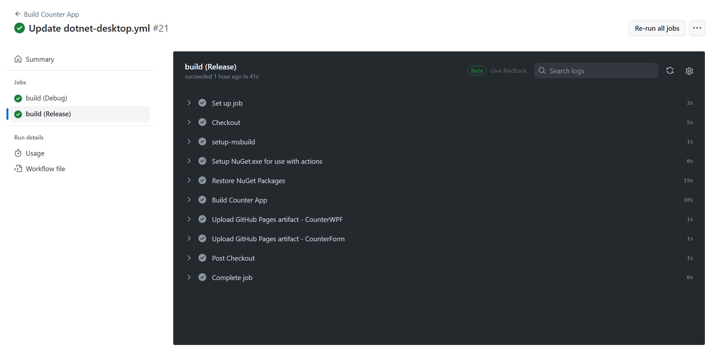

[Github Actions] c#(.NET Framework) を ビルドする
今更ながら "Github Actions" 環境で c# (.NET Framework) アプリを CI/CD
してみたいと思いまして、トライした内容をこちらで記載してみたいと思います。
1.1. "Github" にプロジェクトを作成
"Github" のアカウントを既に所有しているものとして記載します。
1.2. c# (.NET Framework 4.8) プロジェクトを作成
Pipeline を実行する対象となるプロジェクトを作成します。
ここでは以下のようなテストプロジェクトを作成して進めました。
Step 1
先ほど作成した Git プロジェクト（Counter）を Clone します。
Step 2
Clone した場所へ Visual Studio で新しい c# プロジェクトを作成します。
私は以下のような環境で c# プロジェクトを作成しました。
[環境]
|
| コンパイラ : |
Visual Studio 2022, |
Version 17.9.2 |
|
| 開発言語: |
c# |
|
|
| フレームワーク： |
.NET Framework 4.8 |
4.8.09032 |
|
| テストフレームワーク： |
MSTest.TestAdapter, |
3.1.1 |
|
| |
MSTest.TestFramework, |
3.1.1 |
|
| |
NUnit, |
4.0.1 |
|
| |
NUnit3TestAdapter, |
4.5.0 |
|
| OS : |
Windows11 home, |
23H2 |
|
重要
上記「テストフレームワーク」に記載の４つは、必ず NuGet で登録を行います。
NuGet 以外の方法で環境に登録すると、後述の Pipelines
で期待する動作をすることが難しくなります。

代表的な Unit テストフレームワーク（NUnit、MSTestV1、MSTestV2）についても準備して動作を評価してみます。
[table.] 各プロジェクトの説明
| プロジェクト名 |
内容 |
| CounterDll |
値（Integer）を管理する class Counter を提供する dll。
class Couter
は、Increment, Decrement, Clear ３つのメソッドを持つ。 |
| CounterForm |
class Counter を使った WinForm アプリ。 |
| CounterWPF |
class Counter を使った WPF アプリ。 |
| testCounter1 |
CounterDll をテストする。NUnt 版。 |
| testCounter2 |
CounterDll をテストする。MSTestV1 版。 |
| testCounter3 |
CounterDll をテストする。MSTestV2 版。 |
Visual Studio 上の画面の様子です。

図： CounterForm 画面例

図： CounterWPF 画面例

1.3. Git リポジトリへプロジェクトをコミット＆プッシュ
Github へコミット＆プッシュします。手順については本ページの主たる内容から外れるので記載を割愛します。
以上で Github Actions を操作する前の事前準備を完了です。
Github にプログラムをコミットされている状態からスタートします。まずは Actions を有効化するまで進めましょう。
Github メニュー上にある「Actions」をクリックします。

"Suggested for this repository" として ".NET Desktop" をご提案頂いています。これの［Configure］ボタンをクリックしてみます。
"dotnet-desktop.yml" を自動生成してくれました。出力されたままの情報を以下に記載します。
["dotnet-desktop.yml"]
# This workflow uses actions that are not certified by GitHub.
# They are provided by a third-party and are governed by
# separate terms of service, privacy policy, and support
# documentation.
# This workflow will build, test, sign and package a WPF or Windows Forms desktop application
# built on .NET Core.
# To learn how to migrate your existing application to .NET Core,
# refer to https://docs.microsoft.com/en-us/dotnet/desktop-wpf/migration/convert-project-from-net-framework
#
# To configure this workflow:
#
# 1. Configure environment variables
# GitHub sets default environment variables for every workflow run.
# Replace the variables relative to your project in the "env" section below.
#
# 2. Signing
# Generate a signing certificate in the Windows Application
# Packaging Project or add an existing signing certificate to the project.
# Next, use PowerShell to encode the .pfx file using Base64 encoding
# by running the following Powershell script to generate the output string:
#
# $pfx_cert = Get-Content '.\SigningCertificate.pfx' -Encoding Byte
# [System.Convert]::ToBase64String($pfx_cert) | Out-File 'SigningCertificate_Encoded.txt'
#
# Open the output file, SigningCertificate_Encoded.txt, and copy the
# string inside. Then, add the string to the repo as a GitHub secret
# and name it "Base64_Encoded_Pfx."
# For more information on how to configure your signing certificate for
# this workflow, refer to https://github.com/microsoft/github-actions-for-desktop-apps#signing
#
# Finally, add the signing certificate password to the repo as a secret and name it "Pfx_Key".
# See "Build the Windows Application Packaging project" below to see how the secret is used.
#
# For more information on GitHub Actions, refer to https://github.com/features/actions
# For a complete CI/CD sample to get started with GitHub Action workflows for Desktop Applications,
# refer to https://github.com/microsoft/github-actions-for-desktop-apps
name: .NET Core Desktop
on:
push:
branches: [ "main" ]
pull_request:
branches: [ "main" ]
jobs:
build:
strategy:
matrix:
configuration: [Debug, Release]
runs-on: windows-latest # For a list of available runner types, refer to
# https://help.github.com/en/actions/reference/workflow-syntax-for-github-actions#jobsjob_idruns-on
env:
Solution_Name: your-solution-name # Replace with your solution name, i.e. MyWpfApp.sln.
Test_Project_Path: your-test-project-path # Replace with the path to your test project, i.e. MyWpfApp.Tests\MyWpfApp.Tests.csproj.
Wap_Project_Directory: your-wap-project-directory-name # Replace with the Wap project directory relative to the solution, i.e. MyWpfApp.Package.
Wap_Project_Path: your-wap-project-path # Replace with the path to your Wap project, i.e. MyWpf.App.Package\MyWpfApp.Package.wapproj.
steps:
- name: Checkout
uses: actions/checkout@v3
with:
fetch-depth: 0
# Install the .NET Core workload
- name: Install .NET Core
uses: actions/setup-dotnet@v3
with:
dotnet-version: 6.0.x
# Add MSBuild to the PATH: https://github.com/microsoft/setup-msbuild
- name: Setup MSBuild.exe
uses: microsoft/setup-msbuild@v1.0.2
# Execute all unit tests in the solution
- name: Execute unit tests
run: dotnet test
# Restore the application to populate the obj folder with RuntimeIdentifiers
- name: Restore the application
run: msbuild $env:Solution_Name /t:Restore /p:Configuration=$env:Configuration
env:
Configuration: ${{ matrix.configuration }}
# Decode the base 64 encoded pfx and save the Signing_Certificate
- name: Decode the pfx
run: |
$pfx_cert_byte = [System.Convert]::FromBase64String("${{ secrets.Base64_Encoded_Pfx }}")
$certificatePath = Join-Path -Path $env:Wap_Project_Directory -ChildPath GitHubActionsWorkflow.pfx
[IO.File]::WriteAllBytes("$certificatePath", $pfx_cert_byte)
# Create the app package by building and packaging the Windows Application Packaging project
- name: Create the app package
run: msbuild $env:Wap_Project_Path /p:Configuration=$env:Configuration /p:UapAppxPackageBuildMode=$env:Appx_Package_Build_Mode /p:AppxBundle=$env:Appx_Bundle /p:PackageCertificateKeyFile=GitHubActionsWorkflow.pfx /p:PackageCertificatePassword=${{ secrets.Pfx_Key }}
env:
Appx_Bundle: Always
Appx_Bundle_Platforms: x86|x64
Appx_Package_Build_Mode: StoreUpload
Configuration: ${{ matrix.configuration }}
# Remove the pfx
- name: Remove the pfx
run: Remove-Item -path $env:Wap_Project_Directory\GitHubActionsWorkflow.pfx
# Upload the MSIX package: https://github.com/marketplace/actions/upload-a-build-artifact
- name: Upload build artifacts
uses: actions/upload-artifact@v3
with:
name: MSIX Package
path: ${{ env.Wap_Project_Directory }}\AppPackages
この yml ファイルをコミットすることで Actions も実行されますが、当然ながらエラーになります。
エラーではありますが一旦これで Actions を動作できるようになりました。
デフォルトのままではビルドも通らずエラーで終わってしまうので、まずはビルドしてアーティファクトへ登録するまで yml ファイルを修正します。
こんな感じ。これで正常にビルドしてアーティファクト登録できました。
["dotnet-desktop.yml"]
name: Build Counter App
on:
push:
branches: [ "main" ]
pull_request:
branches: [ "main" ]
jobs:
build:
strategy:
matrix:
configuration: [Debug, Release]
runs-on: windows-latest # For a list of available runner types, refer to
# https://help.github.com/en/actions/reference/workflow-syntax-for-github-actions#jobsjob_idruns-on
steps:
- name: Checkout
uses: actions/checkout@v4.1.1
with:
fetch-depth: 0
- name: setup-msbuild
uses: microsoft/setup-msbuild@v2
- name: Setup NuGet.exe for use with actions
# You may pin to the exact commit or the version.
# uses: NuGet/setup-nuget@a21f25cd3998bf370fde17e3f1b4c12c175172f9
uses: NuGet/setup-nuget@v2.0.0
- name: Restore NuGet Packages
run: nuget restore Counter.sln
- name: Build Counter App
run: msbuild Counter.sln /p:Configuration=$env:Configuration
env:
Configuration: ${{ matrix.configuration }}
- name: Upload GitHub Pages artifact - CounterWPF
uses: actions/upload-pages-artifact@v3.0.1
with:
# Artifact name
name: CounterWPF_${{ matrix.configuration }}
# Path of the directory containing the static assets.
path: CounterWPF\bin\${{ matrix.configuration }}
- name: Upload GitHub Pages artifact - CounterForm
uses: actions/upload-pages-artifact@v3.0.1
with:
# Artifact name
name: CounterForm_${{ matrix.configuration }}
# Path of the directory containing the static assets.
path: CounterForm\bin\${{ matrix.configuration }}
補足説明
- runs-on: windows-latest
windows-latest 以外に windows-2022, windows-2019 を設定できます。
詳細は
Workflow syntax for GitHub Actions - GitHub Docs を参照。
- windows-latest: 本書記載時点は "Visual
Studio 2022 Enterprise"
- windows-2022: "Visual Studio 2022
Enterprise"
- windows-2019: "Visual Studio 2019
Enterprise"
「Actions」をクリックしたときの画面です。
一番上の結果をクリックして表示した画面です。Artifacts として４つ登録されていることがわかります。
各 Artifacts をクリックすると zip 圧縮されたビルド結果をダウンロードすることができます。
「Matrix: build」の部分をクリックしていくと下図のような画面を表示します。
エラーになっている場合はこちらの画面上で詳細を確認できます。

こちら、試行錯誤中のエラー画面例です。こんな感じでエラー発生場所および詳細を確認することができます。
ユニットテスト（UnitTest）の実施を追加します。
"microsoft/vstest-action" を使用して実現します。
補足説明：
- testCounter1.dll : NUnit によるユニットテストです。テスト項目数 6。
- testCounter2.dll : MSTestV1 によるユニットテストです。テスト項目数 5。
- testCounter3.dll : MSTestV2 によるユニットテストです。テスト項目数 5。
["dotnet-desktop.yml"]
name: Build Counter App
on:
push:
branches: [ "main" ]
pull_request:
branches: [ "main" ]
jobs:
build:
strategy:
matrix:
configuration: [Debug, Release]
runs-on: windows-latest # For a list of available runner types, refer to
# https://help.github.com/en/actions/reference/workflow-syntax-for-github-actions#jobsjob_idruns-on
steps:
- name: Checkout
uses: actions/checkout@v4.1.1
with:
fetch-depth: 0
- name: setup-msbuild
uses: microsoft/setup-msbuild@v2
- name: Setup NuGet.exe for use with actions
# You may pin to the exact commit or the version.
# uses: NuGet/setup-nuget@a21f25cd3998bf370fde17e3f1b4c12c175172f9
uses: NuGet/setup-nuget@v2.0.0
- name: Restore NuGet Packages
run: nuget restore Counter.sln
- name: Build Counter App
#run: msbuild Counter.sln /p:Configuration=Release
run: msbuild Counter.sln /p:Configuration=$env:Configuration
env:
Configuration: ${{ matrix.configuration }}
- name: vstest-action
uses: microsoft/vstest-action@v1.0.0
with:
# Run tests from the specified files
testAssembly: |
**\${{ matrix.configuration }}\testCounter1.dll
**\${{ matrix.configuration }}\testCounter2.dll
**\${{ matrix.configuration }}\testCounter3.dll
!**\obj\**
- name: Upload GitHub Pages artifact - CounterWPF
uses: actions/upload-pages-artifact@v3.0.1
with:
# Artifact name
name: CounterWPF_${{ matrix.configuration }}
# Path of the directory containing the static assets.
path: CounterWPF\bin\${{ matrix.configuration }}
- name: Upload GitHub Pages artifact - CounterForm
uses: actions/upload-pages-artifact@v3.0.1
with:
# Artifact name
name: CounterForm_${{ matrix.configuration }}
# Path of the directory containing the static assets.
path: CounterForm\bin\${{ matrix.configuration }}
UnitTest を実行した結果画面です。
期待する16個のテストを実施し、全てパスしていることを画面上で確認できました。
うまく動作してそうです。全テスト（16項目）が実行されて Passed になっていることを確認できました。
なお、"microsoft/vstest-action@v1.0.0"
について、下図のような警告表示がありました。
具体的な文章は下記の通り。Node.js 関連みたいに読めます。
Node.js 16 actions are deprecated. Please update the following actions to
use Node.js 20: microsoft/vstest-action@v1.0.0. For more information see:
https://github.blog/changelog/2023-09-22-github-actions-transitioning-from-node-16-to-node-20/.
The following actions uses node12 which is deprecated and will be forced
to run on node16: microsoft/vstest-action@v1.0.0. For more info:
https://github.blog/changelog/2023-06-13-github-actions-all-actions-will-run-on-node16-instead-of-node12-by-default/
vstest-action は最新版 v1.0.0
を使っているし、説明文の内容からたぶん実害無いと判断。解決策もわからないので一旦無視したいと思います。解決情報など見つけたらこちらの記事を更新するようにします。
"darenm/Setup-VSTest" を使用して実現します。
DEPRECATED (廃止された機能) となっていますが本書記載時点では問題なく使えました。
補足説明：
- testCounter1.dll : NUnit によるユニットテストです。テスト項目数 6。
- testCounter2.dll : MSTestV1 によるユニットテストです。テスト項目数 5。
- testCounter3.dll : MSTestV2 によるユニットテストです。テスト項目数 5。
["dotnet-desktop.yml"]
name: Build Counter App
on:
push:
branches: [ "main" ]
pull_request:
branches: [ "main" ]
jobs:
build:
env:
buildPlatform: 'Any CPU'
strategy:
matrix:
#configuration: [Debug, Release]
configuration: [Debug]
runs-on: windows-latest # For a list of available runner types, refer to
# https://help.github.com/en/actions/reference/workflow-syntax-for-github-actions#jobsjob_idruns-on
steps:
- name: Checkout
uses: actions/checkout@v4.1.1
with:
fetch-depth: 0
- name: setup-msbuild
uses: microsoft/setup-msbuild@v2
- name: Setup NuGet.exe for use with actions
# You may pin to the exact commit or the version.
# uses: NuGet/setup-nuget@a21f25cd3998bf370fde17e3f1b4c12c175172f9
uses: NuGet/setup-nuget@v2.0.0
- name: Restore NuGet Packages
run: nuget restore Counter.sln
- name: Build Counter App
#run: msbuild Counter.sln /p:Configuration=Release
run: msbuild Counter.sln /p:Configuration=$env:Configuration
env:
Configuration: ${{ matrix.configuration }}
# Setup VSTest
- name: Setup VSTest.console.exe
# You may pin to the exact commit or the version.
# uses: darenm/Setup-VSTest@d9a5dffa3f11d9c27ec42eb69515d3aaeaad9ef8
uses: darenm/Setup-VSTest@v1.2
# VSTest
- name: Run VSTest
run: >
vstest.console.exe
**/bin/Debug/testCounter*.dll
- name: Upload GitHub Pages artifact - CounterWPF
uses: actions/upload-pages-artifact@v3.0.1
with:
# Artifact name
name: CounterWPF_${{ matrix.configuration }}
# Path of the directory containing the static assets.
path: CounterWPF\bin\${{ matrix.configuration }}
- name: Upload GitHub Pages artifact - CounterForm
uses: actions/upload-pages-artifact@v3.0.1
with:
# Artifact name
name: CounterForm_${{ matrix.configuration }}
# Path of the directory containing the static assets.
path: CounterForm\bin\${{ matrix.configuration }}
UnitTest を実行した結果画面です。
期待する16個のテストを実施し、全てパスしていることを画面上で確認できました。
本ページの情報は、特記無い限り下記 MIT ライセンスで提供されます。
The MIT License (MIT)
Copyright 2024 Kinoshita Hidetoshi
Permission is hereby granted, free of charge, to any person obtaining a copy
of this software and associated documentation files (the "Software"), to deal
in the Software without restriction, including without limitation the rights
to use, copy, modify, merge, publish, distribute, sublicense, and/or sell
copies of the Software, and to permit persons to whom the Software is
furnished to do so, subject to the following conditions:
The above copyright notice and this permission notice shall be included in all
copies or substantial portions of the Software.
THE SOFTWARE IS PROVIDED "AS IS", WITHOUT WARRANTY OF ANY KIND, EXPRESS OR
IMPLIED, INCLUDING BUT NOT LIMITED TO THE WARRANTIES OF MERCHANTABILITY,
FITNESS FOR A PARTICULAR PURPOSE AND NONINFRINGEMENT. IN NO EVENT SHALL THE
AUTHORS OR COPYRIGHT HOLDERS BE LIABLE FOR ANY CLAIM, DAMAGES OR OTHER
LIABILITY, WHETHER IN AN ACTION OF CONTRACT, TORT OR OTHERWISE, ARISING FROM,
OUT OF OR IN CONNECTION WITH THE SOFTWARE OR THE USE OR OTHER DEALINGS IN THE
SOFTWARE.
{kind=link}